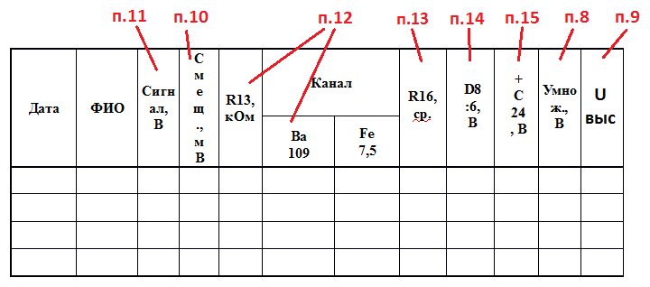
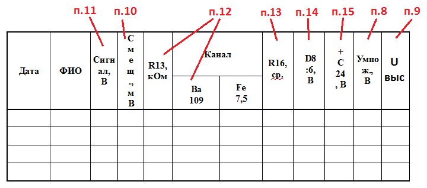
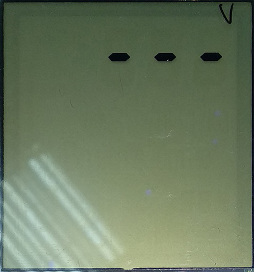
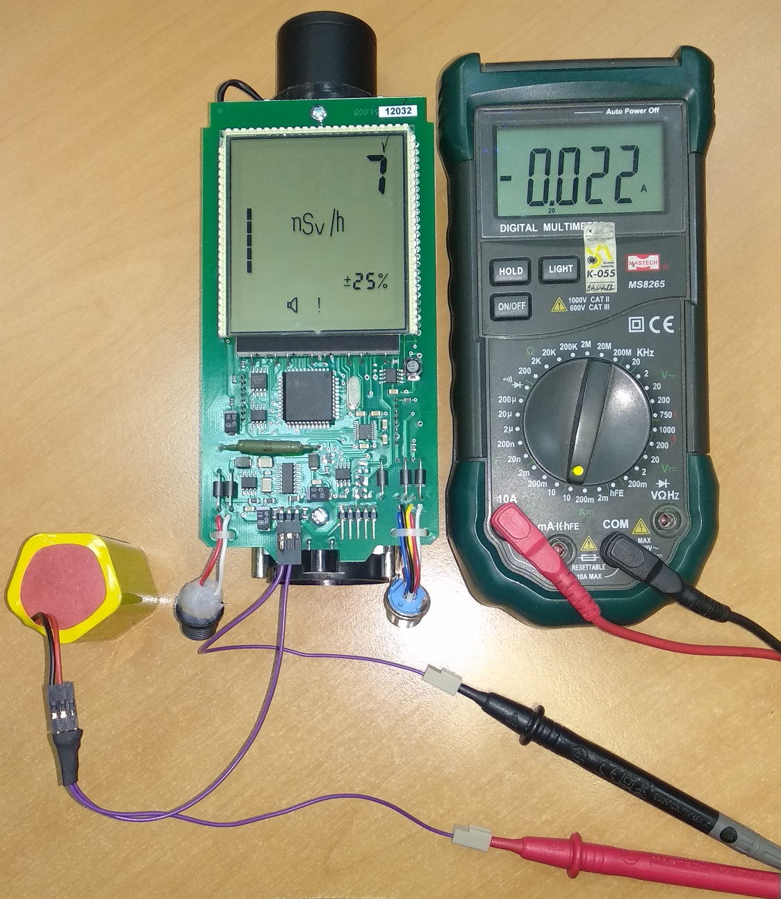

Дозиметр рентгеновского излучения
ДКР-АТ1103М.
Инструкция по настройке
Как сделать инициализацию 957
Как проверить ток потребления и ток заряда
Смещение -3В...-5В
Как включить спектрометрический режим
Как сделать предварительную калибровку по 133Ba
1. Все 11ХХ изначально прошиты прошивкой 1125, поэтому первое,что необходимо сделать, это прошить дозиметр нужной прошивкой
- Подключить дозиметр к USB адаптеру (адаптер к USB пока не подключать)
- Замкнуть на контроллере землю (22-й вывод, например) и PSEN (32-й вывод). А лучше зажать кнопку звука
- Подключить адаптер к USB, при этом будет слышен звуковой сигнал. Кнопку можно отпустить
- Прошивать с помощью Flip, прошивка 1103v1.hex

2. Наклеить наклейки с внутренним порядковым номером, полученным с монтажа приборам. Этот же номер вписать в паспорт настройки
 Приготовить паспорт. В него будут записываться данные настройки:

Приготовить паспорт. В него будут записываться данные настройки:

- соответствие типа номиналов элементов и правильность их установки согласно ПЭ3 и СБ.
- отсутствие обрывов и коротких замыканий элементов и печатных проводников.
- отсутствие коротких замыканий по шинам питания.
4. Визуально проконтролировать одинаково высокую контрастность свечения всех сегментов ЖКИ
для этого после включения прибора и появления индикации тестового изображения нажать и удерживать кнопку подсветки для удержания на табло тестового изображения на требуемое время, после чего кнопку отпустить5. Провести инициализацию 957
После прошивке, при включении дозиметра на табло появляется мигающее
сообщение «Err25», сопровождающиеся прерывистым звуковым сигналом (ошибка данных энергонезависимой
памяти,
означающая, что в данном случае в памяти ничего не записано из-за первого включения).

Это значит, что прибор не инициализирован. Для этого нужно:
- При включении нажать и удерживать кнопку
- Нажать два раза , на экране появится "---": 
- Два раза нажать кнопку
- Набрать "957", для этого с помощью клавиш и выбирается цифра, а с помощью выбирается следующая позиция
- После ввода последней цифры, нажать

Прибор инициирован. После перезагрузки он будет работать в обычном режиме
Также прибор можно инициировать с помощью ПО ATAS tech на ПК
6. Проверить ток потребления и ток заряда БА
- включить в разрыв цепи «+» БА амперметр
- включить ДКР и измерить его ток потребления, значение которого должно быть не более 30 мА; 
- Подключить адаптер питания 12В и измерить ток заряда БА, значение которого должно быть примерно равно 400мА

7. Проверить индикатор заряда
К выключенному ДКР подключить адаптер 12В, при этом на табло должен загореться символ, указывающий на подключение внешнего источника питания и индицирующий работу режима заряда БА
8. Проверить осциллографом наличие светодиодного импульса в точке 11 платы преобразователя ”фон”.
Максимальная амплитуда сигнала не должна превышать 100В и иметь такую форму(обязательно иметь "горб"[1] и длинный "спад"[2]): Данные записать в паспорт ("Умнож")
Данные записать в паспорт ("Умнож")
9. Проверить осциллографом наличие высоковольтных импульсов в точке 14 платы преобразователя ”фон”.
 Максимальная амплитуда сигнала не должна превышать 70в и иметь такую форму
(при превышении напряжения свыше 70В, незамедлительно отключите прибор!):
Максимальная амплитуда сигнала не должна превышать 70в и иметь такую форму
(при превышении напряжения свыше 70В, незамедлительно отключите прибор!):
 Данные записать в паспорт ("Uвыс")
Данные записать в паспорт ("Uвыс")
10. Выставить смещение -3…-5мВ
Мультиметром на пределе 200m замерить напряжение. Оно должно быть в промежутке от -3mV до -5mV. Если напряжение не входит в промежуток, следует скорректировать его подобрав и установив резистор на место [А], чтобы уменьшить, и на [В], чтобы увеличить. В большинстве случаев подходит такой алгоритм:
- На место [А] запаять резистор на 3.6 МОм
- Если напряжение больше необходимого, поменять на резистор меньшего номинала
- Если напряжение меньше необходимого, поменять на резистор большего номинала

Чтобы не гадать с номиналом, можно воспользоваться такой таблицей (пока не хватает статистики, поэтому таблица примерная):
| Начальное напряжение (mV) | Какой резистор запаять (МОм) | Примерно какое напряжение получится (mV) |
|---|---|---|
| 2.68 | 3.6 | -3.7 |
| 4.91 | 2.7 | -3.51 |
| 3.0 | 3.0 | -4.77 |
| 2.42 | 3.6 | -4.01 |
| -0.28 | 5.6 | -4.44 |
| -1.03 | 6.2 | -4.70 |
Можно также воспользоваться формой:
11. Выставить уровень опорного сигнала (сигнал светодиода пройденного через блок ФЭУ)
на выводе 7 D4.2 (рис.5) в значение 1.30…1.35В (используется осциллограф Tektronix TDS 2012C) как показано на рис. 6 путем подстройки потенциометра R38 (рис. 7). В случае если диапазона регулировки этого потенциометра недостаточно для установления требуемого значения уровня то следует подобрать резистор R37 для установки нужного значения Данные записать в паспорт ("Сигнал")

12. Сделать предварительную калибровку по Ba133
- Подключите прибор к ПЭВМ с помощь кабеля БД через модуль адаптера USB-БД
Переведите прибор в спектрометрический режим F5
- При включении нажать и удерживать кнопку
- Нажать два раза , на экране появится "---":
- Два раза нажать кнопку
- Набрать "718", для этого с помощью клавиш и выбирается цифра, а с помощью выбирается следующая позиция
- После ввода последней цифры, нажать
- Нажать и удерживать кнопку , появится ".1."
- Нажимая кнопку , выбрать седьмой режим
- Нажать , появится "F5"
- Спектрометрический режим включен
- Закрепить на "колпачке" прибора источник Барий (Ba)
- Запустите программу ATAS tech. Нажмите режим «инициализировать соединение». Программа должна обнаружить прибор и вывести на экран спектр, считываемый с прибора. То же (и проще) можно сделать с помощью BackgroundCalibration: запустить BG, выбрать дозиметр, нажать спектр. Режим F5 включится автоматически:
- При помощи подборочного резистора R13 грубо и потенциометра R16 платы преобразователя «ФОН»
(рис.
10) точно установите второй пик спектра Ba133 в 109±1 канал. При этом первый пик Ba133 должен
находится
примерно в 42 канале:

- Чтобы переместить пик влево, сопротивление резистора R13 нужно увеличить
- Чтобы переместить пик вправо, сопротивление резистора R13 нужно уменьшить
Чтобы не подбирать резистор, можно воспользоваться формулой: 47/х*1090, где х — это № канала при 470кОм. Или воспользоваться формой:
- Чтобы переместить пик влево, подстроечный нужно повернуть по часовой
- Чтобы переместить пик вправо, подстроечный нужно повернуть по против часовой Один канал — это, примерно, четверть оборота.
- Данные записать в паспорт ("R13" и "Ba 109")
С помощью подбора резистора R13 канал устанавливается примерно, плюс-минус 5 каналов. Поэтому для более точной настройки применяется подстроечный резистор R16:
13. Проконтролировать напряжение на 3 выводе микросхемы D8 платы преобразователя «Фон».
Оно должно находится в примерно в середине диапазона 0,7…1,7В, что свидетельствует о том что потенциометр после регулировки не находится в крайних положениях а схема температурной стабилизации высокого находится в рабочем режиме. Данные записать в паспорт ("R16")14. Проконтролировать напряжение на 6 выводе микросхемы D8 платы преобразователя «Фон».
Оно не должно превышать значения 4,2 В для нормальной работы схемы светодиодной стабилизации! Данные записать в паспорт ("D8:6")15. Проконтролировать напряжение на эмиттере транзистора VT6 (или +С24) платы преобразователя «Фон».
При нормальном режиме работы прибора оно не должно превышать половины напряжения питания т. е. +3В и является косвенным показателем уровня высокого напряжения на ФЭУ! Данные записать в паспорт ("+C24")
Данные записать в паспорт ("+C24")